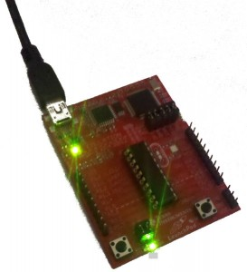

What is hardware? The simple answer is, if you can touch it it’s hardware! The word hardware refers to all the physical components that make up a project. This includes the microcontroller chip, the Launchpad board, the components like switches that provide input signals into the microcontoller, and the components that the microcontroller will control like motors and LEDs. It’s also the wire, the breadboard, the nuts and bolts.
On the other hand a computer program or mpy program is software (you can’t touch it, software is very soft indeed!).
OK, what is electronics then? electronics is hardware also, but it refers only to the electrical components, such as the microcontoller chip, integrated circuits and LEDs, resistors, transistors, basically any hardware that works with electrons.
There are guides which explain how to make the projects and how they work, just click on the links to find out more.
All the mpy projects use the Launchpad MSP430 microcontroller. This website contains simplified descriptions of the main functions of the MSP430. For more detailed descriptions please refer to the TI datasheets for the MSP430 here and here, and this excellent book on the MSP430.
microcontrollerThe MSP430 microcontroller is an Integrated Circuit (IC) or chip as engineers like me call it. It is the large black thing that sits in the middle of the Launchpad board. Think of the MSP430 microcontroller as the brain. It controls the hardware by running a computer program that is programmed inside it. The Launchpad Board with the MSP430 chip on it is connected to the PC using a USB cable. Using the mpyEditor running on your PC your mpy program is converted into machine code (which is the 1s and 0s that the MSP430 understands) This is then downloaded into the Launchpad board and flashed it into the memory of the MSP430 chip. |

Launchpad MSP430 Microcontroller The program then runs directly on the Launchpad board. The connectors on the side of the Launchpad are wired directly to the pins of the MSP430. This is where you connect LED’s, motors, and switches. However the MSP430 is in a socket and once it is flashed you can remove it and insert it into a breadboard or another circuit board. |
inputs and outputsTo make a microcontroller do anything interesting you will need to connect hardware inputs and outputs to it. Outputs are all the things that the microcontroller will control like LED’s and motors. Inputs are all the things that the microcontroller will monitor like switches or infrared sensors. The Launchpad board has 2 switches and 2 LED’s so you can use it without connecting any other inputs or outputs and make it flash the LEDs on the board. But to do anything interesting you will want connect up your own inputs and outputs |
{kind=link}